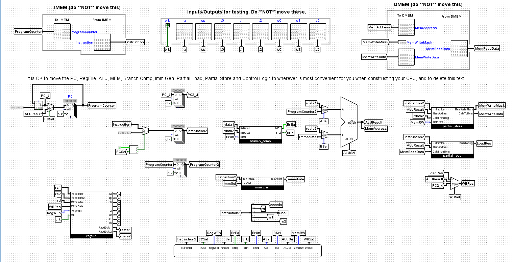
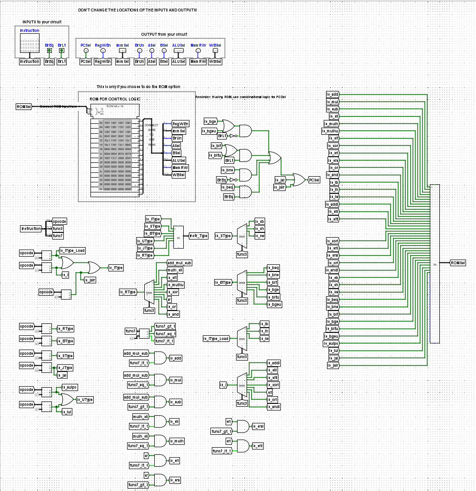
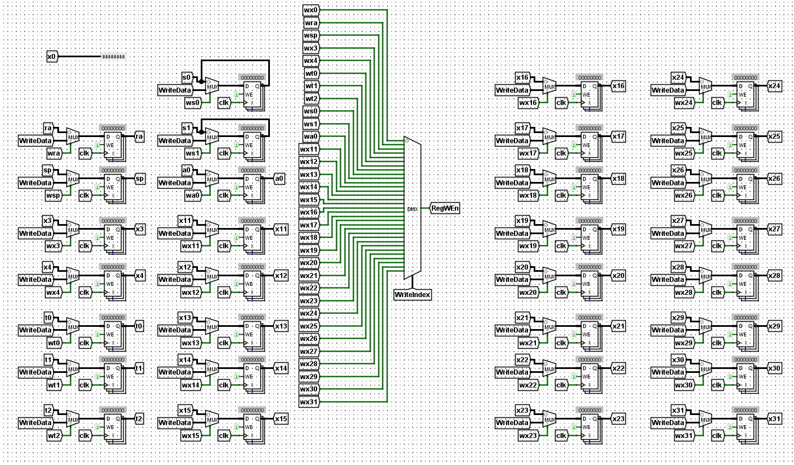
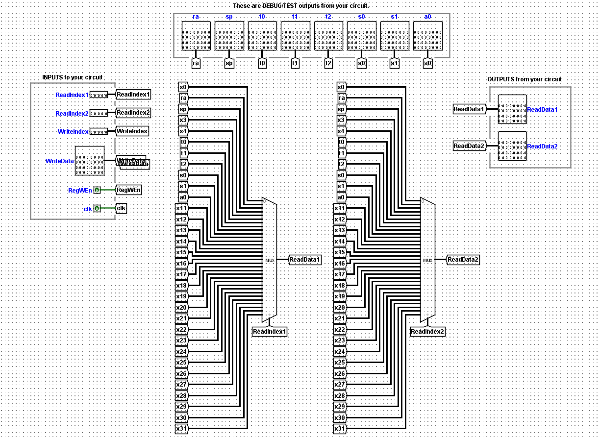

Project · Computer architecture
Five-stage RISC-V CPU in Logisim
A custom 32-bit pipelined CPU built in Logisim with a five-stage pipeline (fetch, decode, execute, memory, write-back) that executes RISC-V instructions.

What I worked on
- Designed and implemented a custom 32-bit pipelined CPU in Logisim, developing the datapath, control logic, and five-stage pipeline (fetch, decode, execute, memory, write-back) to execute RISC-V instructions.
- Developing hazard detection and forwarding logic to maintain cycle-accurate pipeline performance.
Control logic

Register file

